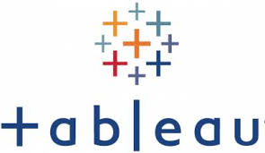
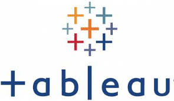

Hi! I'm Spandana, an aspiring data analyst from India with a strong passion for data. I recently graduated and have completed over 8+ personal projects.
While I don't have professional experience yet, my projects showcase my skills and dedication.
Skills
Power BI
Developed end-to-end dashboards, including data extraction, transformation,and vizualization.
Created interactive reports
to track key performance indicators
Microsoft Excel
Advanced data analysis, including pivot tables, VLOOKUP, and complex DAX formulas.
SQL
Comprehensive database querying and management. Designed and optimized queries for data retrival and manipulation
Tableau
Beginner-level data vsualization. Created basic dashboards and vizualizations to present data insights
Python
Basic concepts and syntax. Familiar with using Jupyter Notebook for coding and data anlysis.
Interests
I enjoy diving into Books for my Self Improvement
Sketching is my creative outlet, allowing me to express my thoughts and emotions through art
I love Exploring New Places Which provides me a refreshing break from daily routines
I'm constantly seeking ways to grow and improve through self-practice and self-help books
My curiosity drives me to explore new ideas and ask questions

Analyzed and Vizualized Pizza Sales Data to identify key performance indicators(KPI's), Sales trends, and top Products.
Used SQL for Data Extraction and Excel for Cleaning and VIzualization, resulting in a comprehensive dashboard

This Project analyzes Customer Churn at ABC mutinational Bank, revealing 20.4% overall churn rate, with higher churn in Germany,
among females, active customers with credit cards, and those aged 51-60. data was cleaned and categorized using Power Query, enabling
targeted retention strategies and Predictive analysis to enhance Customer Satisfaction and loyalty

This Project involves a comprehensive analysis of Blinkit's Sales Performance, Customer Satisfaction and inventory distribution using
key KPI's and dynamic vizualizations in Excel to uncover actionable insights and opportunities for Improvement, ultimately enhancing operational
efficiency, boosting Customer Satisfaction, and driving Revenue Growth

This Project analyzes Election Results 2024 focusing on Seat Distribution, and Vote Margins to understand
Party Performance across different regions. Identified KPI's and other important Insights(Problem Statements) using SQL
to retrieve relevant information

It provides a comprehensive overview of key performance metrics for 2021 and 2022. It highlights peak Revenue
hours in the evening, with a significant portion of riders being registered(81.17%). The analysis shows a steady
rise in Profit and Revenue from March to September, followed by a decline. These insights suggest Potenetial for startegic
price adjustments in 2023 to maximize Revenue

The Amazon Prime Video Dashboard on Tableau offers interactive insights into movies and TV shows, featuring vizualizations
like a Radial Chart for ratings and a World Map for content Availability. Users can Explore Data on Genre, Cast, Duration,
and Release Year, with Top genres and production trends highlighted. This tool helps optimize content selection and enhance
viewer engagement

This Project focuses on analyzing a Comprehensive dataset of Automobile Attributes to uncover Insights into what drives the
Pricing dynamics of cars in the market
This Project involves SQL Server and Power BI to analyze and vizualize data from both structured(data warehouse)
and unstructured(lightweight) sources. Key tasks include Data Cleaning, Transformation, and Creating Insightful
dashboards to address business needs. Valuable insights will be derived from comparing data types, updating the
Data warehouse, and vizualizing sales, customer, and product details for informed decision-making.

This project created an Amazon Prime Dashboard using Power BI to analyze Movies and TV show data from 1920 to 2021. It offers real-time insights into Ratings, Genres, Release
Trends, and Country- specific Content, helping descision- makers enhance content strategies and improve Viewer Experience


 
